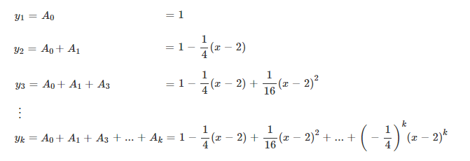

Algumas funções reais de variáveis reais podem ser aproximadas por polinômios infinitos. Como por exemplo a função `f(x)=4/(x+2)`, como veremos a seguir.
`f(x)=sum_(n=0)^oo(-1/4)^n(x-2)^n-=sum_(n=0)^ooar^n:.{(a=1),(r=-1/4(x-2)):}`Logo, a série de potência é convergente quando `|r|lt1`, ou seja, no intervalo `I_c=(:-2,6:)`
A aproximação da função `f(x)` pela série de potência no intervalo de convergência pode ser visualizado da seguinte forma:
